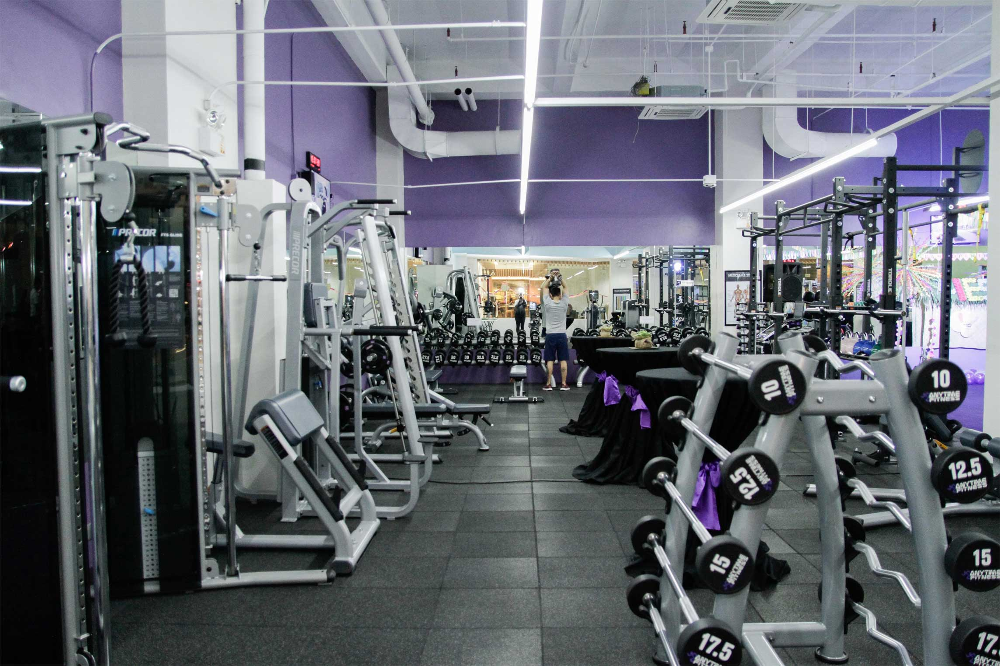

Es nuestro gimnasio con ayuda de la Alcaldia damos la posiblidad a las personas de la tercera edad para que puedan realizar actividades fisicas que mejoren su calidad de vida con actividades adecuadas para ellos.
Uno de los más grandes proyectos hasta el momento es el Reto Fitness, donde motivamos a nuestros clientes a cambiar fisica y mentalmente. El objetivo es obtener una tranformación total.
Cuando comenzamos con este proyecto nunca pensamos llegar a este punto. Contamos con la mejor maquinaria de todo el país, sabemos lo importante que es tener la maquinaria adecuada para nuestros clientes.
